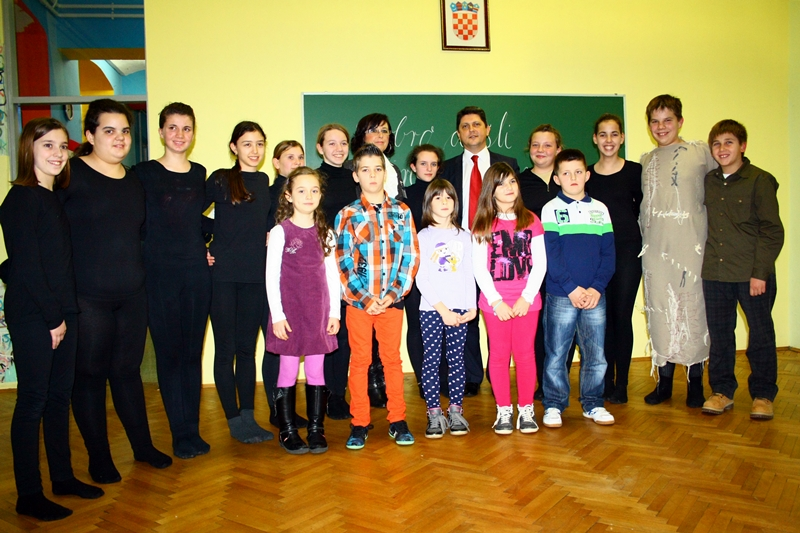

Općinu Kršan sinoć je posjetio ministar vanjskih poslova Rumunjske Titus Corlățean. Sa čelnicima općine i županije razgovarao je o zaštiti istrorumunjskog jezika, kao i o obnovi školske zgrade u Šušnjevici, za što je jučer zatražio i pomoć hrvatskog predsjednika Ive Josipovića i ministrice vanjskih poslova Vesne Pusić s kojima se sastao u Zagrebu. U izjavi za novinare rumunjski ministar vanjskih poslova kazao je i kako je s predsjednikom Josipovićem i ministricom Pusić razgovarao i o učvrščivanju odnosa između Hrvatske i Rumunjske, kako onih političkih, tako i ekonomskih u smislu ulaganja te suradnje kao članica Europske unije i NATO-a, a za što postoji obostrani veliki interes. S druge strane, kazao je, postoji poseban most koji spaja Hrvatsku i Rumunjsku, a to je kulturološki most. Rekao je i kako u Rumunjskoj već dugo živi važna hrvatska manjina, osobito u jugozapadnom dijelu, u Banatu, a najviše pripadnika te manjine živi u Karašovi, a imaju i predstavnika u parlamentu. U Rumunjskoj je jaka njihova kulturna aktivnost, što je za našu zemlju važno, jer je važno da očuvamo to kulturno nasljedstvo.
S druge strane vi ovdje u Hrvatskoj imate nešto posebno – malu zajednicu koja govori veoma dragocjen jezik, koji se ovdje naziva vlaškim jezikom, a znanstveni termin je istrorumunjski. On predstavlja jedan od pet dijalekata rumunjskoj jezika. Taj je jezik jednako važan za Hrvatsku, kao i za Rumunjsku, jer je na UNESCO-voj listi nematerijalne kulturne baštine.
U razgovoru s predsjednikom Josipovićem i ministricom vesnom Pusić bilo je govora o suradnji i pomoći u očuvanju ovog kulturološkog identiteta. – Razgovarali smo i o školi u Šušnjevici, rekao je rumunjski ministar vanjskih poslova i o tome da Ministarstvo znanosti, obrazovanja i sporta pomogne lokalnoj samoupravi kako bi se škola obnovila i da se nastavi s programom putem kojeg bi se djeci pomoglo da i dalje baštine ovaj poseban jezik. Dodao je kako i s hrvatske i s rumunjske strane postoji razumijevanje da se ovaj jezik očuva, da djeca i dalje govore ovaj rijedak i iznimno poseban jezik. Rekao je Titus Corlățeana i kako Rumunjska ima prilično zanimljivu povijest, jer su se u srednjem vijeku zvali Vlasima, te da su njihovi rođaci koji su živjeli na Balkanu, na južnoj strani Dunava uspijeli sačuvati to kulturno nasljeđe.
Zato su male zajednice jako važne. Postoji još jedna zanimljiva veza između nas. Ne znam da li ste znali da u Rumunjskoj postoji druga Istra. To je staro grčko-rimsko naselje te sam pozvao lokalne čelnike da posjete ovo mjesto, ali i da se bratime s Karašovom. – Druga Istra se nalazi na obali Crnog mora, blizu Constanze, a Istria je bila staro naselje Rimljana koji su osvojili Daciju. To je danas samo selo, ali su u blizini ostaci grčkog i rimskog naselja, koji su također na listi UNESCO-ve baštine, pojasnio je rumunjski ministar vanjskih poslova. U izjavi za novinare, a na pitanje da činjenica da se ljudi u Šušnjevi ne nazivaju Rumunjima nije problem, Corlățean je kazao.
Pa, nitko te ljude ne obvezuje da se tako identificiraju. Ono što je važno jest pomoć u očuvanju jezika. Ponovit ću još jednom. Ovaj je jezik na posebnoj listi UNESCO-a, na listi rijetkih jezika, naziva se Vlaškim što je stari naziv za Rumunje. – O temi razgovora s rumunjskim ministrom vanjskih poslova zamjenica istarskog župana Viviana Benussi, koja je uz općinske čelnike, dočekala visokog gosta, kazala je. O obnovi škole u Šušnjevici, a što je i interes Rumunjske, Benussi je rekla. Nakon susreta u općinskom središtu ministar vanjskih poslova je u pratnji domaćina, općinskog načelnika Valdija Runka i njegovih suradnika obišao Osnovnu školu Ivana Gorana Kovačića u Čepiću, gdje su mu učenici priredili i kraći kulturno-umjetnički program, dijelom izveden i na vlaškom, odnosno istrorumunjskom. Pozvao je on učenike ove škole da ovog ljeta ponovno posjete Rumunjsku u kojoj su bili prije dvije godine, a zatim se u Šušnjevici susreo s tamošnjim žiteljima, izvornim govornicima istrorumunjskog.


February 6, 2014
© 2014 Radio Labin